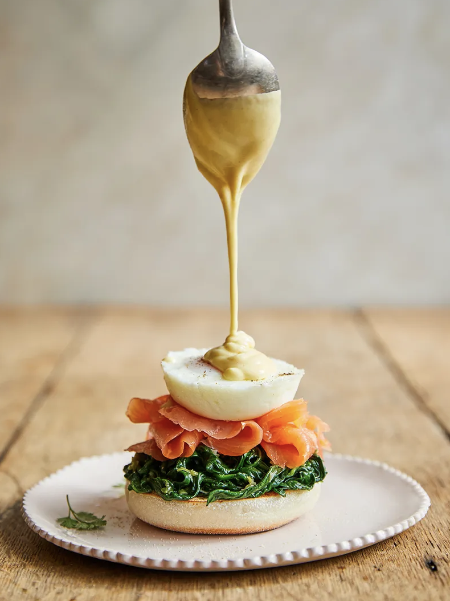

GET HOME
Martin Freeman's Egg royale
SMOKED SALMON, SPINACH & HOLLANDAISE

Making your own muffins is such an easy, rewarding thing to
do and the taste is next-level delicious. This recipe makes
more than you need, but who doesn’t love a cheeky toasted muffin with a cuppa? Here, I’ve
buddied them up with spinach, smoked salmon and eggs, but they’re also great with ham, halloumi or a
vocado. Anything goes!
Difficulty: NOT TOO TRICKY
Serves: 4 WITH LEFTOVER MUFFINS AND HOLLANDAISE
Cooking time: 1 HOUR 30 MINUTES PLUS PROVING
Ingredients:
- olive oil
- 4 spring onions
- ½ a clove of garlic
- 500 g baby spinach
- ½ a bunch of fresh marjoram, (15g)
- 1 whole nutmeg, for grating
- ½ a lemon
- butter, for greasing
- 4 large free-range eggs
- 200 g smoked salmon, from sustainable sources
- fresh chervil, to serve (optional)
Muffins:
- 450 ml tepid milk
- 1 x 7 g sachet yeast
- 2 teaspoons caster sugar
- 700 g strong white bread flour , plus extra for dusting
- 50 g semolina
Hollandaise:
- 200 g unsalted butter
- 4 large free-range egg yolks
- ½ a lemon
- 2 teaspoons Dijon mustard
- white wine vinegar
Method:
- To make the muffins, place the milk in a jug, stir in the yeast and sugar, and leave for a couple of minutes until frothy.
- Place the flour and 2 teaspoons of fine sea salt into a large mixing bowl and make a well in the middle. Pour in the milk mixture and mix well to form a dough. Shape into a ball and knead with clean hands or in a freestanding mixer until smooth and elastic. Place in an oiled bowl, cover with a clean damp tea towel and leave to prove in a warm place for 1 hour or until doubled in size.
- Knock back the dough and roll out on a flour-dusted surface to about 2cm thick. Stamp out 10 level circles with an 8cm round cutter, rerolling as necessary.
- Carefully place the muffins onto a large tray lined with a large sheet of semolina-dusted greaseproof paper and sprinkle over a little more semolina. Cover with a tea towel and leave to prove for 45 minutes to 1 hour, or until doubled in size.
- Heat a heavy non-stick pan or griddle over a low heat, add the muffins and cook for 6 to 7 minutes on each side or until golden – you may need to do this in batches. Transfer to a wire rack to cool slightly.
- Meanwhile, make the hollandaise. Gently melt the butter in a small pan.
- Whisk the egg yolks, 1 tablespoon of lemon juice and the mustard in a heatproof bowl set over a shallow pan of simmering water.
- Slowly pour in the melted butter, whisking constantly until well combined. Whisk in a splash of vinegar, then have a taste and season to perfection. Turn the heat off and keep warm over the pan of water, stirring occasionally. Loosen with a splash of water if needed.
- Trim, wash and finely chop the spring onions. Peel and finely slice the garlic.
- Place a large frying pan on a medium-low heat with a little drizzle of olive oil, add the spring onions, garlic and spinach, then pick in the marjoram. Finely grate over some nutmeg, then add a pinch of sea salt and some freshly ground black pepper. Cook for 5 minutes or until the spinach is dark and delicious. Add lemon juice to taste and keep warm until ready to serve.
- Place a large, shallow pan of water on a medium heat and bring to the boil.
- Grease four tea cups with butter and crack an egg into each. Place the cups in the pan of water, then cover and poach for 4 to 5 minutes or until the eggs are cooked to your liking.
- To assemble, halve 4 warm muffins and divide the spinach and smoked salmon between each. Top with a perfectly poached egg, lightly season, then spoon a tablespoon of hollandaise over each one. Finish with a final grating of nutmeg and a few sprigs of chervil, if you like.
Tips:
To keep your hollandaise in a stable, warm condition, put it into a preheated Thermos flask while you get on with the rest of the cooking. Simply pour it over your eggs when you’re ready to plate up. Job done!